The economy is adapting
Climate change is prompting businesses and governments to take action – adopting greener production methods, changing logistics, and developing markets for green products. As a result, new business opportunities are emerging and technological breakthroughs are being made.
- Reducing food waste
- Promoting plant-based diets and reducing meat consumption
- Promoting public transport, cycling, and walking
- Investing in clean energy and energy efficiency
- Upgrading and decarbonising buildings
- Switching to electric vehicles
- Restoring land and halting deforestation
- Phasing out coal-fired power plants
- Reducing emissions from cement, steel, and plastics production
- Reducing emissions from aviation and shipping
Source: IPCC’s Sixth Assessment Report, World Resources Institute (WRI)
Alternative and renewable energy
Climate change is driving the world away from conventional energy sources – coal, oil, and natural gas. To reduce their carbon footprint and slow global warming, countries and companies are actively developing alternative energy. Renewable energy sources are becoming a key focus for the entire energy sector.
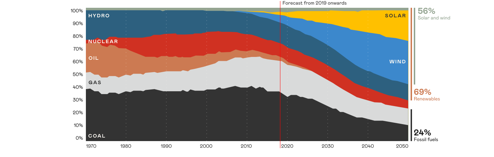
Source: BloombergNEF, IEA
According to projections by BloombergNEF and the IEA, the world is set to undergo a major energy transformation by 2050. The share of renewables could rise to 69%, driven by rapid growth in solar and wind, while the share of fossil fuels could fall almost threefold.
The terms “alternative” and “renewable” energy sources are often used interchangeably. However, there is a difference between them.
Alternative energy sources are any alternatives to conventional energy sources such as coal, oil, and gas. They include both renewable sources and finite alternatives such as nuclear energy, hydrogen, biogas, and synthetic fuels.
Renewable energy sources are those that are naturally replenished and considered environmentally friendly. Examples include solar, wind, hydro, bioenergy, and geothermal energy.
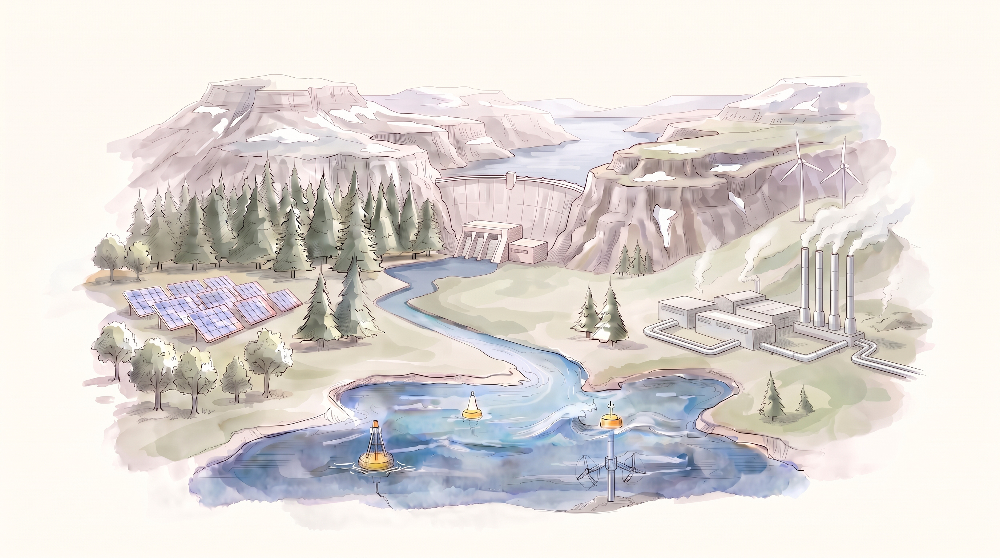
Low-carbon technologies in transport
To reduce emissions and improve air quality, the transport sector is adopting new standards. Key focus areas include low-carbon fuels, battery power, more efficient engines, and innovative technologies.
Hover over the card
Aviation is looking for ways to reduce its environmental impact. Key focus areas include switching to sustainable aviation fuel (SAF) and developing hybrid and fully electric propulsion systems. Aircraft designs are also becoming more aerodynamic to reduce fuel consumption.
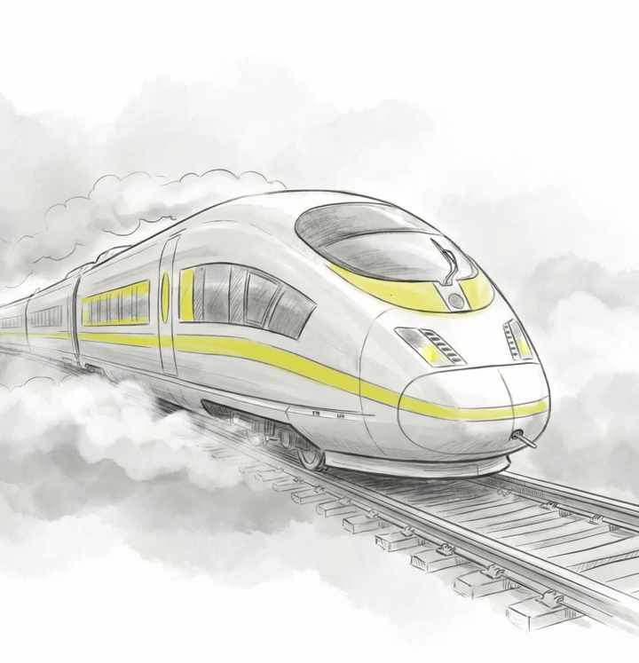
TrainTrains are becoming even more environmentally friendly. Locomotives are switching to hydrogen and battery power, while carriages are becoming more energy-efficient. Railways are increasingly powered by renewable energy, while digital systems help optimise train operations.
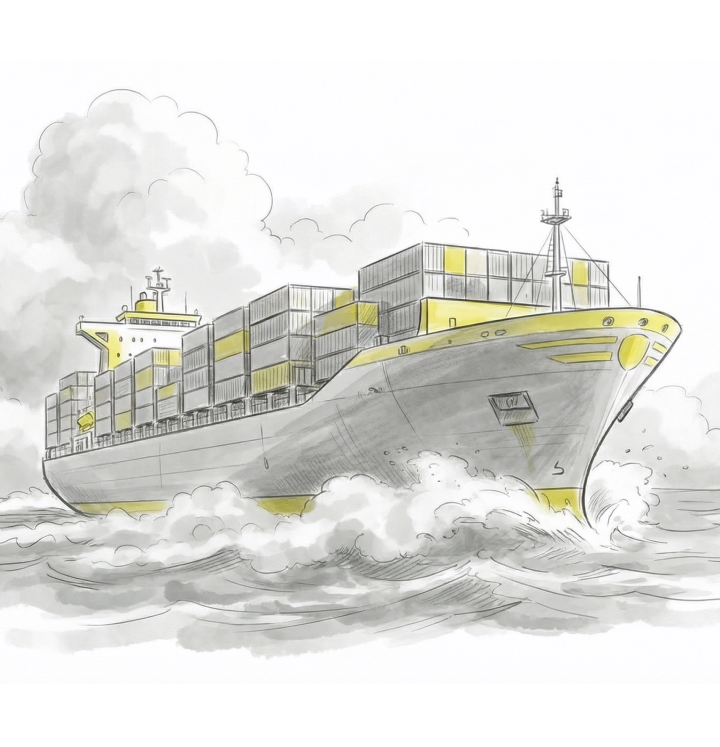
Cargo shipMaritime transport is also going green. Cargo vessels are switching to battery-electric propulsion and alternative fuels. Solar panels are also increasingly being installed to power onboard systems.
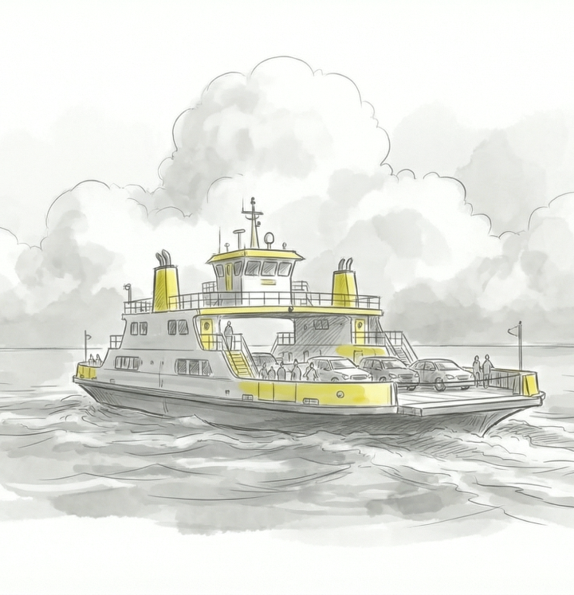
River ferryRiver transport is becoming cleaner. Ferries are increasingly being equipped with electric and hybrid propulsion systems and using cleaner fuels such as liquefied natural gas (LNG) and biomethane.
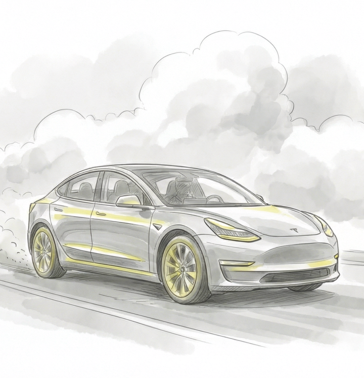
Electric vehicleThe key advantage of an electric vehicle is that it produces no direct emissions. Using renewable energy keeps its carbon footprint to a minimum. It also requires fewer service fluids, reducing waste generated during operation.
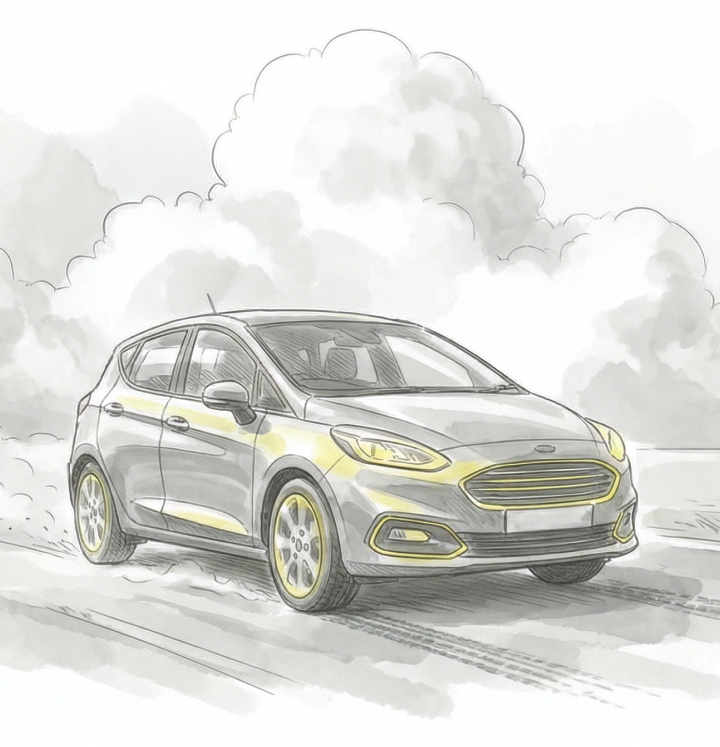
CarElectric vehicles are not the only way to make transport greener. Other options include hydrogen-powered and gas-powered vehicles and hybrids. Another important focus area is car sharing, which helps reduce the overall number of cars on city streets.
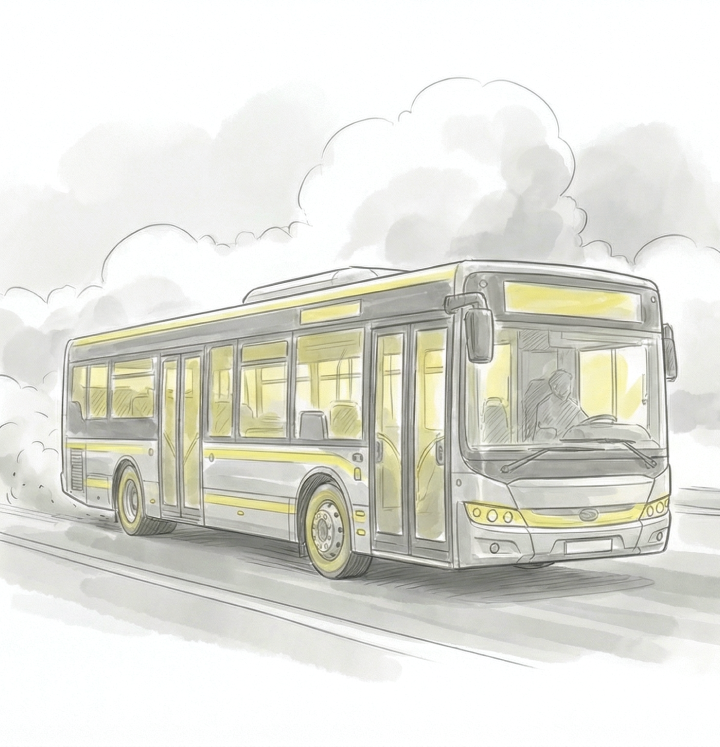
BusPublic transport is becoming increasingly green. Diesel buses are being replaced by electric buses, gas-powered models, and hybrids. This helps significantly improve air quality in cities.
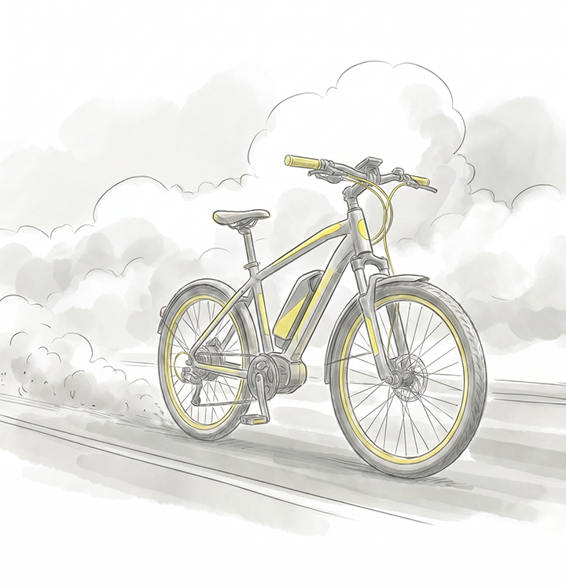
Bicycle and scooterThese are among the most environmentally friendly modes of transport, powered entirely by your own energy. They produce no direct emissions, help reduce congestion and pressure on urban infrastructure, and are also a great way to stay fit.
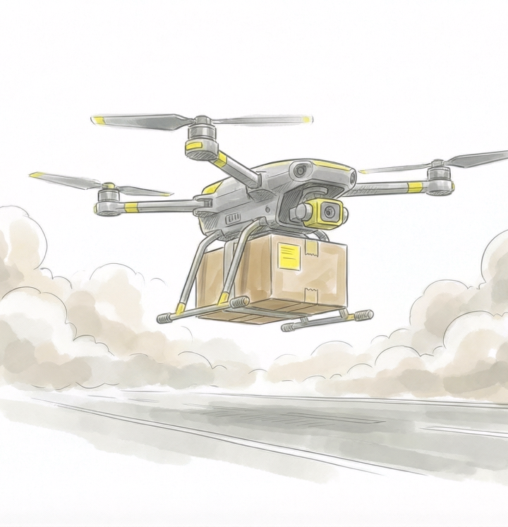
Delivery droneDrones, particularly in logistics, could become part of a greener future. They run on electricity, while smart algorithms calculate the shortest and most energy-efficient routes. This is an important part of the smart city concept.
Business and climate: from risks to opportunities
Recognising the inevitability of global climate change, companies are developing corporate climate policies, strategies, roadmaps, and other measures. Businesses are setting ambitious goals to reduce their environmental footprint, make their operations more resilient, increase revenues, and strengthen their competitiveness in the market.
Why does climate change matter to business?
The most direct and obvious impact of climate change is the risk of disruption to infrastructure. However, climate change presents opportunities for companies as well as risks.
Carbon accounting and reporting
To manage its impact on the climate, a company first needs to measure it. That is where carbon accounting comes in – a system for measuring all greenhouse gas emissions. It helps companies comply with legislation, plan emissions reductions, and implement climate projects.
Since 2025, large companies in Russia emitting more than 50,000 tonnes of CO₂ equivalent annually have been required to report their greenhouse gas emissions. Other companies can report voluntarily, for example, to enhance their reputation and attract investors.
Reports are submitted through a dedicated government service – the GHG Emissions Registry. The registry forms part of the State Information System "Energy Efficiency".
How to offset your carbon footprint
Contrary to popular belief, simply planting a tree is not always the best way to offset your carbon footprint. Trees take decades to mature and begin absorbing significant amounts of CO₂. There is also no guarantee that they will survive droughts or wildfires or avoid being cut down.
That is why it is important to support offset projects whose effectiveness has been independently verified. These may include ecosystem restoration, carbon capture and storage, waste recycling, energy efficiency improvements or, in some cases, renewable energy development – provided they deliver demonstrable additional emissions reductions and would not have gone ahead without such support.
It is important to remember that offsetting is no substitute for reducing your own emissions. The priority should be to reduce your carbon footprint first and offset only those emissions that cannot yet be avoided.
Climate projects and carbon credits
In 2021, Russia introduced new rules for businesses under Federal Law No. 296-FZ. Companies can now launch climate projects to reduce their carbon footprint. A climate project is any initiative that helps reduce greenhouse gas emissions or increase their absorption.
Types of climate projects
Here are some examples of climate projects:
Technology-based
- Building renewable energy facilities
- Switching from hydrocarbon-based energy sources to green energy
- Capturing carbon from the atmosphere
- Improving energy efficiency
- Converting greenhouse gases into solid materials
Nature-based
- No-till farming
- Reforestation
- Rewetting wetlands
- Soil carbon sequestration
- Agroforestry
- Reducing methane emissions from cattle
- Preventing deforestation
Climate projects are recorded in dedicated registries. One example is the Russian Carbon Units Registry.
For successfully implementing a climate project, a company receives carbon credits – certificates confirming that it has reduced greenhouse gas emissions.
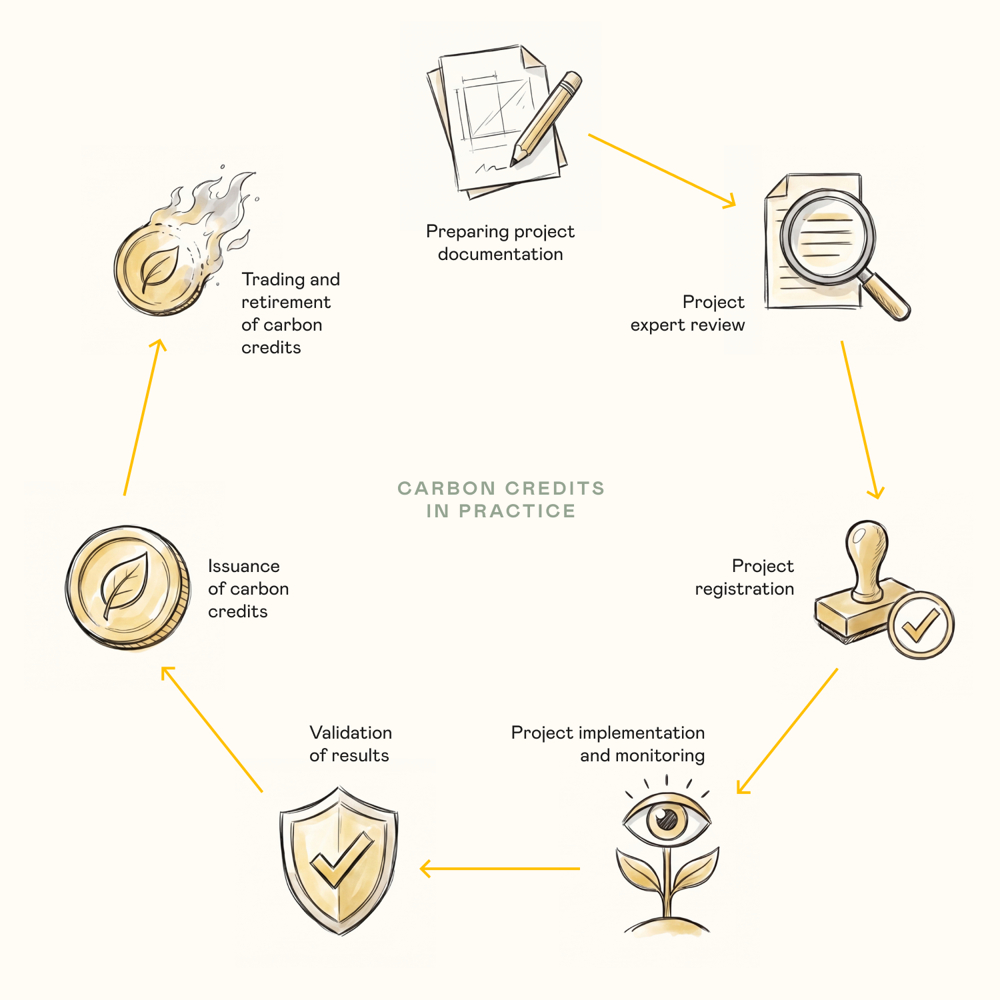
Companies that cannot eliminate all their emissions can buy carbon credits from companies implementing climate projects.
If Russia introduces a compliance carbon market in the future, carbon credits will likely be used to cover emissions exceeding government-imposed limits. They could also be used to pay carbon taxes, as is already common practice internationally.
Climate regulation instruments
In late 2021, Russia approved its Low-Carbon Development Strategy until 2050. The strategy aims to reduce greenhouse gas emissions by 60% from 2019 levels (and by 80% from 1990 levels) by 2050 and achieve carbon neutrality by 2060.
Reducing greenhouse gas emissions in Russia
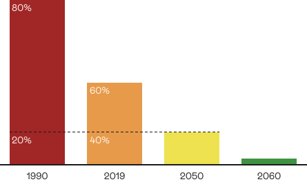
A key condition is to achieve these targets without sacrificing economic growth. Meeting these targets requires robust regulatory mechanisms.
Market-based instruments, which put a price on carbon, are considered the most flexible. The idea is simple: make companies pay for their greenhouse gas emissions. This puts a monetary value on environmental damage and factors it into product prices.
Essentially, a carbon market provides a way to finance climate projects that would not otherwise be commercially viable. The commodity traded on this market is carbon credits, which are generated through efforts to reduce emissions. Because carbon credits are intangible, the main challenge is to establish clear, fair rules for all market participants and provide accessible trading infrastructure.
Global practice
The global carbon market began to take shape in 2005, when the Kyoto Protocol entered into force. The Protocol established three key mechanisms for countries with emissions reduction commitments.
Since 2006, these mechanisms have helped generate around 3 billion carbon credits, most of them from projects in developing countries.
Emissions trading systems
An emissions trading system (ETS) is a compliance market that operates on a cap-and-trade basis within a country or region.
- Cap. The government sets an overall limit, or cap, on emissions from one or more sectors of the economy.
- Trade. Companies must hold an allowance for every tonne of emissions. They can obtain allowances from the government or buy them from other companies that have reduced their emissions and have excess carbon allowances.
In Asia, a key market for Russian products, such systems are still in their early stages but are developing rapidly. With carbon regulation incorporated into the national strategies of most countries in the region, these markets are expected to grow.
How emissions trading systems are introduced
Countries generally take a phased approach. Before launching a national system, they often pilot it in a particular region or for a limited period. Russia’s Sakhalin Experiment is one such pilot carbon market.
The price of carbon (CO₂ equivalent)
The amount a company must pay to the government or through the market for each tonne of greenhouse gases it emits. The market price of carbon credits generally tends towards the prevailing price of CO₂ emissions.
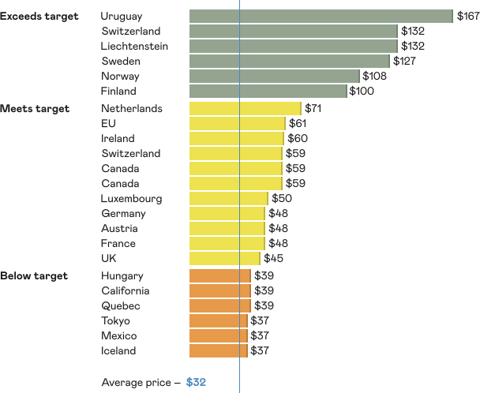
Source: Visual Capitalist
Economic measures and technology solutions are important levers.
But for them to work on a global scale, we need common rules and political will. The next chapter explores how the international community is trying to reach agreement and which international agreements underpin climate policy.